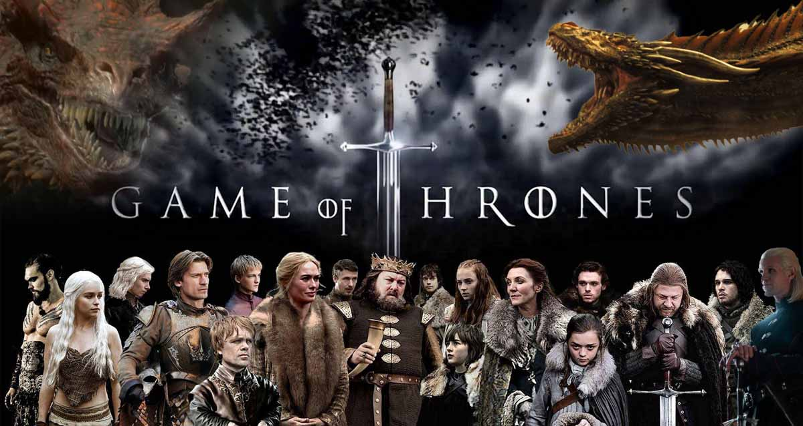

Merhaba ben İsmail Arif Güleç. Dizi ve film izlemeyi ayrıca kitap okumayı çok severim. Teknolojiyle ilgilenmek ise benim en sağlam hobimdir. Şimdi sizlere en sevdiğim kitap, dizi ve filmler hakkında biraz bilgi vereceğim.
Game of Thrones
Dokuz asil aile, Westeros toprakları üzerinde kontrol için savaşırken, eski bir düşman bin yıl boyunca uykuda kaldıktan sonra geri döner.